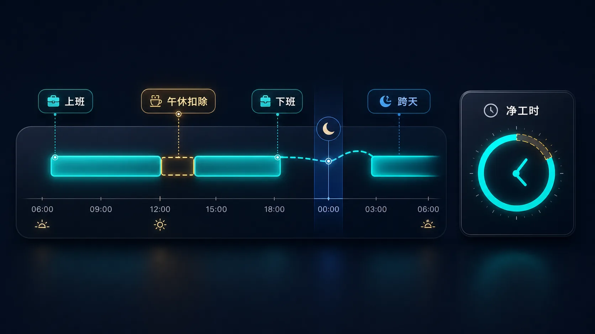
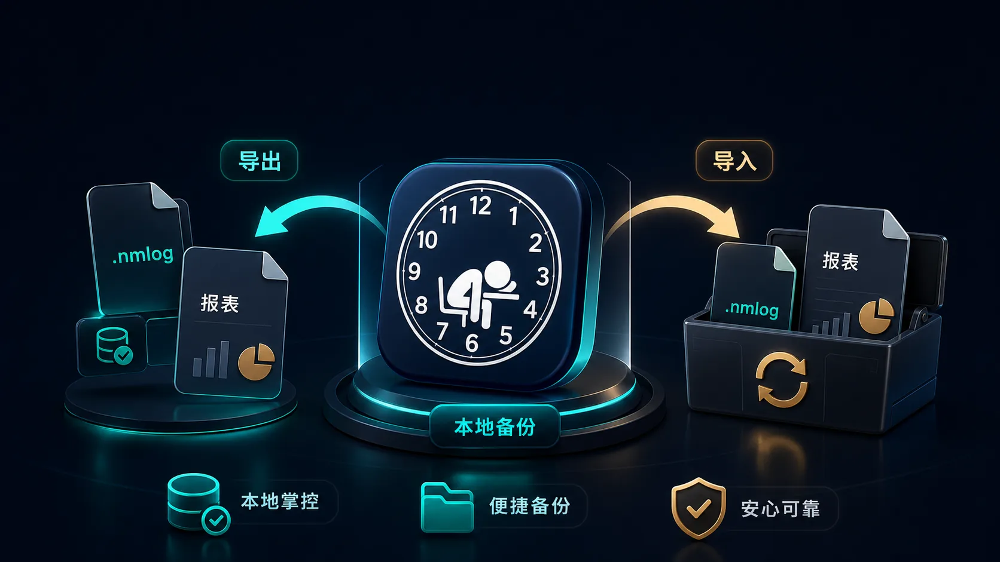

核心功能
不是打卡表，是自己的时间账。
牛马日志记录真实发生的上班、下班、午休、跨天、加班和薪资估算，不按固定排班替你猜时间，适合工作时间不固定、又想把账记清楚的人。
自动打卡
到达设置好的工作地点，自动记下一次上班。
在你授权并完成设置后，牛马日志会尽量在你到达或离开工作地点时补上记录。它不是替你编排班表，而是减少每天重复打开 App 的动作。
午休与跨天班次
午休、跨天和多段班次，最后都算成净工时。
午休扣除、夜间跨天和多段上下班记录会统一进入同一套时间算法，减少自己手算、漏算和重复核对。

加班和薪资估算
把工时变成看得懂的时间账和薪资账。
按你的上下班记录累计工时，再结合时薪、日薪和加班口径做估算。它适合个人核对和复盘，不替代正式工资单。
本地备份与导入导出
记录在本地，也能自己备份和带走。
你可以主动导出备份，换设备或恢复数据时再导入。报表和备份文件由你自己保管，适合留存、核对和迁移。

成就与搞笑短句
严肃账本外面，包一层打工人的黑色幽默。
连续记录、夜班、加班和日常打卡都可以变成轻量成就。短句只是给枯燥记录加一点情绪缓冲，不改变账本本身。
隐私优先
不建账号，不上传你的打卡记录。
首版数据默认保存在设备本地。备份、报表和分享都由你主动发起，适合把工时账本留在自己手里。